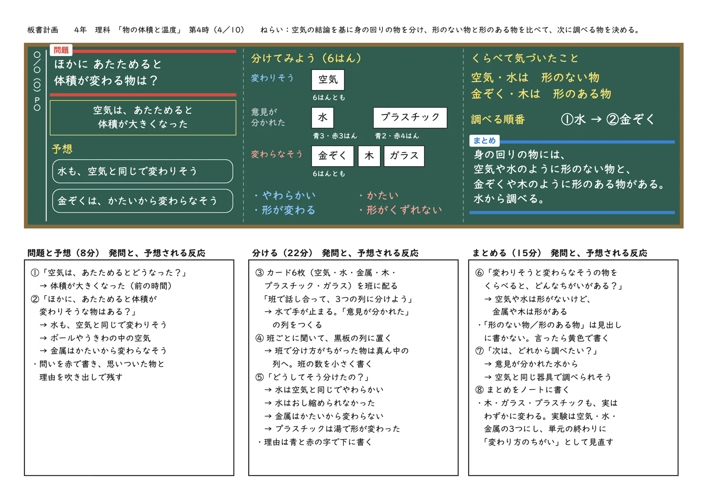
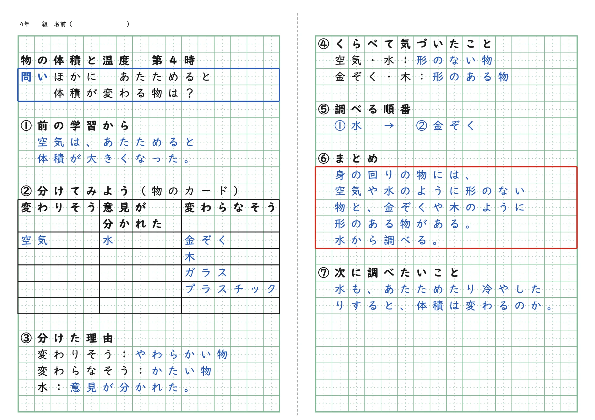
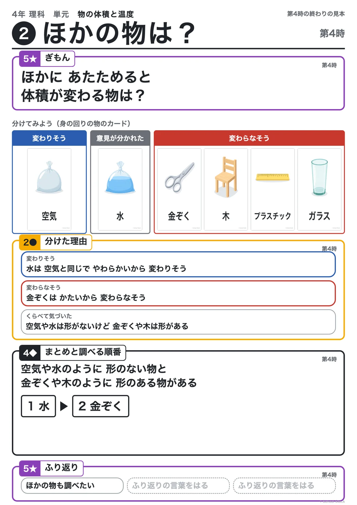

第4時 第１次 空気から、身の回りの物へ
問題ほかに あたためると体積が変わる物は？
Board

Notebook

Aim
ほかに あたためると体積が変わる物はあるのかについて、身の回りの物を分ける活動を通して、空気や水のような形のない物と、金属や木のような形のある物とを比べ、次に調べる物を決めることができる。
Assessment
| 観点 | 評価規準 | 方法 |
|---|---|---|
| 主体的に学習に取り組む態度 | 空気の結論を基に身の回りの物を進んで分け、友だちと理由を伝え合いながら、次に調べる物を決めようとしている。 | 発言・ノート |
Flow
| 配時 | 学習活動 | 指導上の留意点 |
|---|---|---|
| 8分 | １ 空気の結論をふり返り、問いをもつ。 | 〇 「空気のほかに、あたためると体積が変わりそうな物はあるかな」と問い、身の回りの物に目を向けさせる。 |
| 22分 | ２ 素材カードや身の回りの物を、「変わりそう」「意見が分かれた」「変わらなそう」に分ける。 （１）一人で分ける。 （２）分けた理由を出し合う。 | 〇 分け方の根拠を引き出すために、「どうしてそう分けたの？」と理由の理由を聞く。 〇 「形のない物」「形のある物」という言葉は教師から言わず、子どもの理由から出たときに板書する。 〇 分類は子どもの考えとして扱う。木やプラスチックなども実際はわずかに変わることは、第10時に見直す。 |
| 15分 | ３ くらべて分かったことをまとめ、調べる順番を決める。 | 〇 意見が分かれた水を取り上げ、水から調べるという順番を子どもに決めさせる。 〇 分類ボードは、第5時・第7時・第8時にも見返せるように掲示しておく。 |
配時は45分の目安です。
Learning trail

More
ほかに あたためると体積が変わる物は？
器具・準備
手順
結果の見通し 形のない物は「変わりそう」、形のある物は「変わらなそう」に分かれやすい。水は意見が分かれやすい。
身の回りの物には、空気や水のように形のない物と、金属や木のように形のある物がある。意見が分かれた水から調べていく。
水も、あたためたり冷やしたりすると、体積は変わるのだろうか。
空気の結論を基に身の回りの物を分類し、空気や水のような形のない物と、金属や木のような形のある物とを比べて、次に調べる物を決めている。
カードを電子黒板の上で列へ動かせる。書体はBIZ UDゴシック。
拡大印刷して黒板に貼る。第5時・第7時・第8時にも見返す。
黒板用。1まい100×140mm。